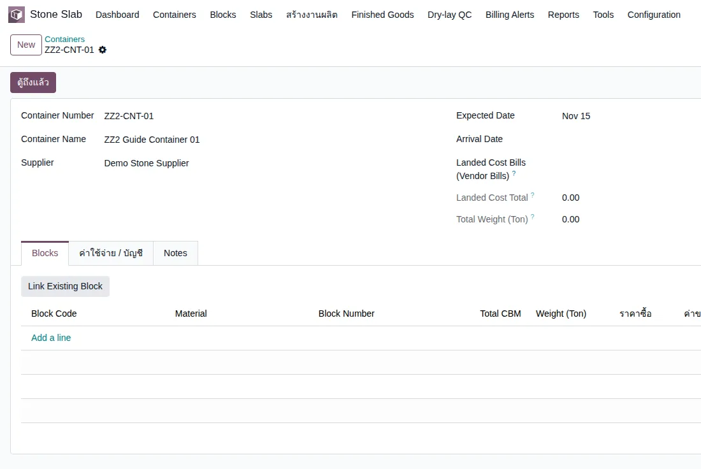
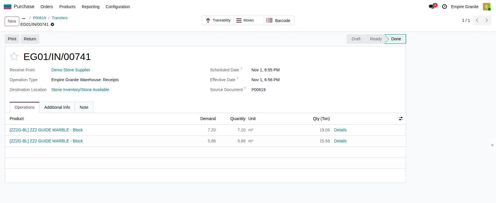
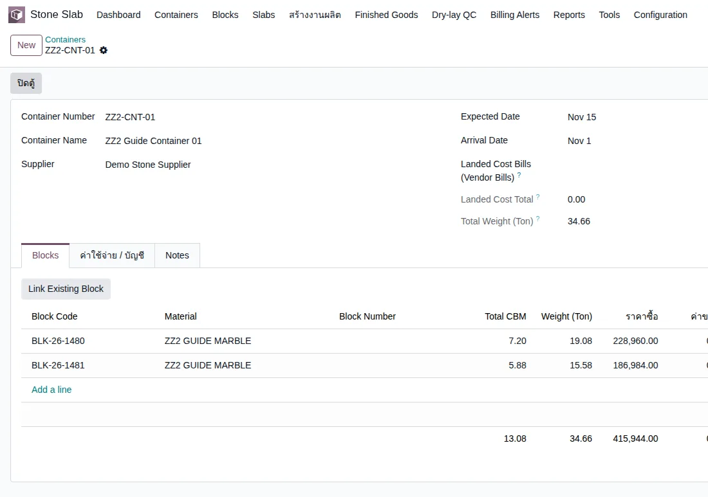
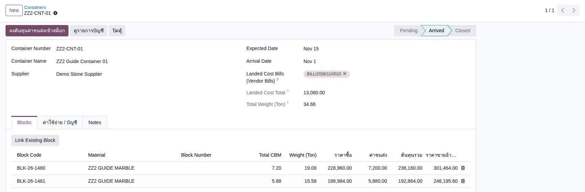
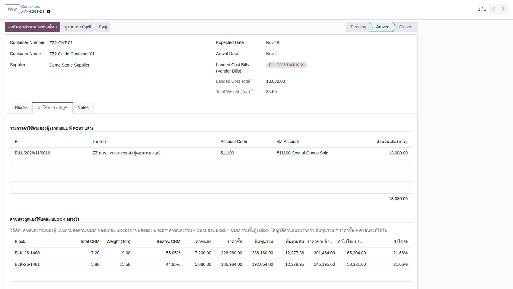
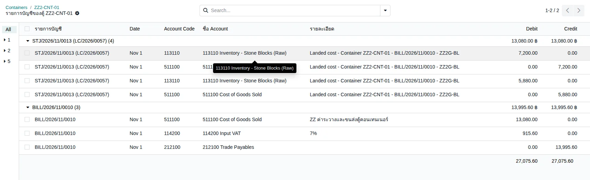
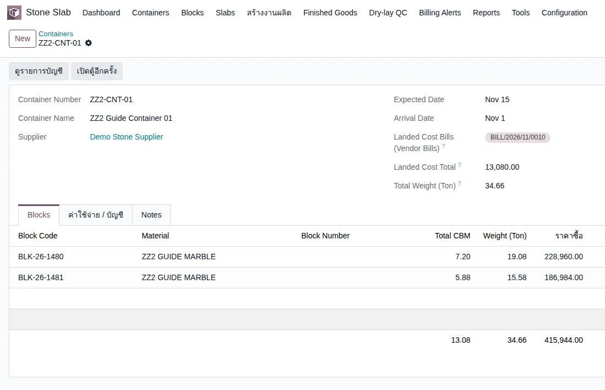

Empire Stone × Empire Granite — QA
Golden Path — ตู้คอนเทนเนอร์: สั่งซื้อ Block ผูกตู้ ค่าขนส่ง และต้นทุนเข้า Block
อัปเดตล่าสุด: 1 พฤศจิกายน 2569 (2026-11-01) · รันจริงบน eg-tst ผ่านหน้าจอ ใช้ผู้ใช้ emgdemo บริษัท Empire Granite
เอกสารเดียวสำหรับเรื่องตู้คอนเทนเนอร์: สร้างตู้ · สั่งซื้อและรับ Block · ผูก Block เข้าตู้ · บันทึกใบแจ้งหนี้ค่าขนส่งแล้วลงต้นทุนเข้า Block ตามขนาด · ดูต้นทุนและรายการบัญชี · ปิดตู้ ทุกเคสเขียนให้ผู้ใช้ไม่เทคนิคทำตามได้ ไม่รวมเคสกรอกผิดหรือดักข้อผิดพลาด ข้อมูลตัวอย่างขึ้นต้นด้วย ZZ
7Test Case ทั้งหมด
3หมวด
5High Priority
2Medium Priority
0Low Priority
เอกสารนี้เป็นฉบับแรกของเรื่องตู้คอนเทนเนอร์
- ทำตามทีละขั้นด้วยคู่มือ คู่มือกดตาม ตู้คอนเทนเนอร์ (มีเหตุผลของแต่ละค่าที่กรอก) · เอกสารนี้ใช้ตรวจผล
- ต้องทำ คู่มือกดตาม Setup ระบบ ตอน 2 มาก่อน เพื่อให้มีสินค้า Block ตัวอย่าง
- ขอบเขต 7 เคส: เตรียมตู้และรับ Block 3 เคส · ค่าขนส่งและต้นทุน 3 เคส · ปิดตู้ 1 เคส
A. เตรียมตู้และรับ Block
สร้างตู้ · สั่งซื้อและรับ Block 2 ก้อน · ผูก Block เข้าตู้และกดตู้ถึงแล้ว · 3 test cases
| TC ID | Scenario | Precondition | Steps | ข้อมูลตัวอย่าง | Expected Result | Priority | ภาพหน้าจอ |
|---|---|---|---|---|---|---|---|
| TC-GP-CNT-01 | สร้างตู้คอนเทนเนอร์ใบใหม่ ระบบสร้าง Analytic Account (กลุ่ม Import Group) ชื่อเดียวกับเลขตู้ให้เอง |
เข้าระบบเป็น Empire Granite · มีผู้ขาย Demo Stone Supplier |
|
Container Number = ZZ2-CNT-01 · Container Name = ZZ2 Guide Container 01 · Supplier = Demo Stone Supplier · Expected Date = 15 พ.ย. | บันทึกสำเร็จ เลขตู้ขึ้นที่แถบนำทาง · สถานะ Pending · Landed Cost Total = 0.00 · Total Weight = 0.00 · มี Analytic Account ชื่อ ZZ2-CNT-01 | High |  |
| TC-GP-CNT-02 | สั่งซื้อ Block เป็นตัน รับของ 2 ก้อน แล้ว Validate ให้ระบบสร้าง Block ไม่ต้องกรอกช่อง Container / Import Group ที่หัวใบสั่งซื้อสำหรับ Block · กด Tab ที่ช่องสุดท้ายของ Details อาจเปิดแถวว่าง 0.000 เพิ่ม ระบบข้ามแถวว่างเอง |
ทำคู่มือ Setup ระบบตอน 2 แล้ว มีสินค้า ZZ2 GUIDE MARBLE - Block |
|
Vendor = Demo Stone Supplier · ZZ2 GUIDE MARBLE - Block · Qty (Ton) = 34.66 · Price / Ton = 12,000 · ก้อนที่ 1 = 3.00 × 1.60 × 1.50 ม. 19.080 ตัน · ก้อนที่ 2 = 2.80 × 1.50 × 1.40 ม. 15.580 ตัน | ใบสั่งซื้อ: Quantity 13.0792 m³ · Unit Price 31,800.00 · ก่อน VAT 415,918.56 · รวม 445,032.86 · ใบรับของเป็น Done · ได้ Block 2 ก้อน ปริมาตร 7.20 และ 5.88 ลบ.ม. น้ำหนัก 19.08 และ 15.58 ตัน ต้นทุนซื้อ 31,800 ต่อ ลบ.ม. (เช่น BLK-26-1480 และ BLK-26-1481) | High |  |
| TC-GP-CNT-03 | ผูก Block เข้าตู้ แล้วกดตู้ถึงแล้ว Block เกิดจากใบรับของ ไม่ได้เข้าตู้เอง ต้องผูกเอง · ผลรวมราคาซื้อบนตู้ 415,944.00 ต่างจากยอดใบสั่งซื้อ 415,918.56 เล็กน้อย เพราะสั่ง 13.0792 ลบ.ม. แต่วัดจริงรวม 13.08 ลบ.ม. |
ทำ TC-GP-CNT-01 และ TC-GP-CNT-02 เสร็จแล้ว |
|
ตู้ ZZ2-CNT-01 · Block BLK-26-1480 และ BLK-26-1481 | แท็บ Blocks มี 2 แถว: 7.20 ลบ.ม. / 19.08 ตัน / ราคาซื้อ 228,960.00 และ 5.88 / 15.58 / 186,984.00 · รวม 13.08 ลบ.ม. 34.66 ตัน 415,944.00 · สถานะตู้เป็น Arrived · Arrival Date เป็นวันนี้ · Total Weight (Ton) = 34.66 | High |  |
B. ค่าขนส่งและต้นทุน
บันทึกใบแจ้งหนี้ค่าขนส่งและลงต้นทุนเข้า Block · ดูต้นทุนต่อ Block · ดูรายการบัญชี · 3 test cases
| TC ID | Scenario | Precondition | Steps | ข้อมูลตัวอย่าง | Expected Result | Priority | ภาพหน้าจอ |
|---|---|---|---|---|---|---|---|
| TC-GP-CNT-04 | บันทึกใบแจ้งหนี้ค่าขนส่ง ผูกกับตู้ แล้วลงต้นทุนเข้า Block ใบแจ้งหนี้ต้องสร้างที่เมนูบัญชี ไม่ใช่ที่ใบสั่งซื้อ · ต้อง Confirm (Post) ก่อน · Bill Date เป็นช่องบังคับ · แบ่งค่าขนส่งตามปริมาตร (ลบ.ม.) ของ Block อย่างเดียว |
ทำ TC-GP-CNT-03 เสร็จแล้ว · มีสินค้าบริการ ZZ ค่าระวางและขนส่งตู้คอนเทนเนอร์ (Service ซื้อได้) |
|
Vendor = Demo Stone Supplier · ZZ ค่าระวางและขนส่งตู้คอนเทนเนอร์ ราคา 13,080 (1,000 บาทต่อ ลบ.ม.) | บิลสถานะ Posted: ก่อน VAT 13,080.00 · VAT 7% 915.60 · รวม 13,995.60 · ที่ตู้ Landed Cost Total = 13,080.00 · หลังกดปุ่มขึ้นข้อความ "ลงต้นทุนค่าขนส่งของ Bill ที่ Post แล้วเรียบร้อย" · แท็บ Blocks: ค่าขนส่งก้อนที่ 1 = 7,200.00 ก้อนที่ 2 = 5,880.00 · ต้นทุนรวม 236,160.00 และ 192,864.00 · เกิดเอกสาร Landed Cost 1 ใบ (เช่น LC/2026/0057) | High |  |
| TC-GP-CNT-05 | ตรวจการแบ่งค่าขนส่งและต้นทุนต่อ Block ที่แท็บ ค่าใช้จ่าย / บัญชี | ทำ TC-GP-CNT-04 เสร็จแล้ว |
|
ตู้ ZZ2-CNT-01 | รายการค่าใช้จ่าย: BILL/2026/11/0010 บัญชี 511100 จำนวน 13,080.00 · ตารางแบ่ง: ก้อนที่ 1 สัดส่วน CBM 55.05% ค่าขนส่ง 7,200.00 ราคาซื้อ 228,960.00 ต้นทุนรวม 236,160.00 · ก้อนที่ 2 สัดส่วน 44.95% ค่าขนส่ง 5,880.00 ราคาซื้อ 186,984.00 ต้นทุนรวม 192,864.00 · รวม ค่าขนส่ง 13,080.00 ราคาซื้อ 415,944.00 ต้นทุนรวม 429,024.00 · ต้นทุนต่อตัน 12,377.36 และ 12,378.95 | High |  |
| TC-GP-CNT-06 | ดูรายการบัญชีของตู้ และเอกสาร Landed Cost ค่าขนส่งถูกย้ายจากค่าใช้จ่ายไปบวกในมูลค่าสต็อก Block · มูลค่าเดิมของก้อนที่ 2 ในเอกสาร Landed Cost คือ 186,960.00 (น้ำหนักตัน × ราคาต่อตัน) ต่างจาก 186,984.00 ที่แท็บ Blocks 24 บาท เพราะคิดคนละฐาน (ตันกับลูกบาศก์เมตร) |
ทำ TC-GP-CNT-04 เสร็จแล้ว |
|
BILL/2026/11/0010 · LC/2026/0057 | กลุ่มบิล BILL/2026/11/0010: เดบิต 511100 ค่าขนส่ง 13,080.00 · เดบิต 114200 ภาษีซื้อ 915.60 · เครดิต 212100 เจ้าหนี้ 13,995.60 · กลุ่ม STJ/2026/11/0013: เดบิต 113110 Inventory - Stone Blocks 7,200.00 และ 5,880.00 · เครดิต 511100 7,200.00 และ 5,880.00 · เดบิตรวมเท่ากับเครดิตรวม (27,075.60) · เอกสาร Landed Cost สถานะ Posted อ้างถึง EG01/IN/00741 และ BILL/2026/11/0010 · มูลค่าสต็อก 228,960 → 236,160 (+7,200) และ 186,960 → 192,840 (+5,880) | Medium |  |
C. ปิดตู้
ปิดตู้เมื่อบิลครบ และเปิดกลับมาได้ · 1 test case
| TC ID | Scenario | Precondition | Steps | ข้อมูลตัวอย่าง | Expected Result | Priority | ภาพหน้าจอ |
|---|---|---|---|---|---|---|---|
| TC-GP-CNT-07 | ปิดตู้ แล้วเปิดตู้อีกครั้ง | ทำ TC-GP-CNT-04 เสร็จแล้ว |
|
ตู้ ZZ2-CNT-01 | หน้าต่างถาม "ปิดตู้แล้วจะแก้ไขข้อมูล ผูก Block หรือผูก Bill เพิ่มไม่ได้ (เปิดตู้อีกครั้งได้) ยืนยันปิดตู้?" · หลัง Ok สถานะ Closed · ปุ่ม Link Existing Block และปุ่มลงต้นทุนหายไป เหลือ ดูรายการบัญชี และ เปิดตู้อีกครั้ง · หลังเปิดอีกครั้งสถานะกลับเป็น Arrived | Medium |  |